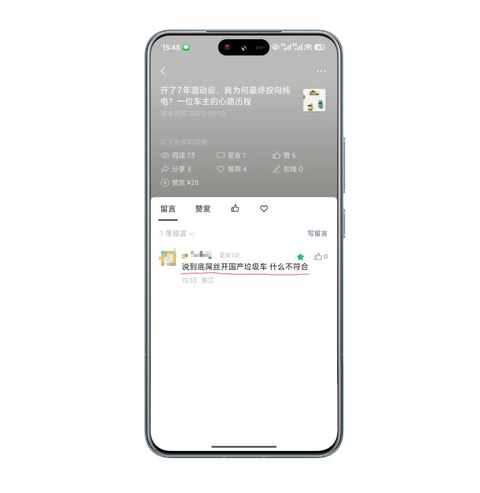
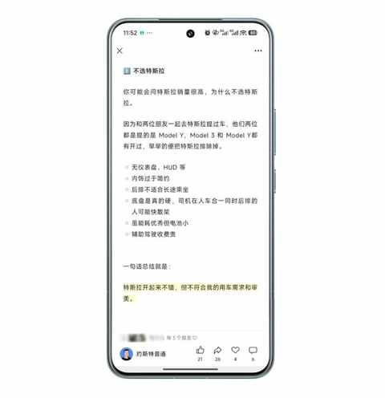
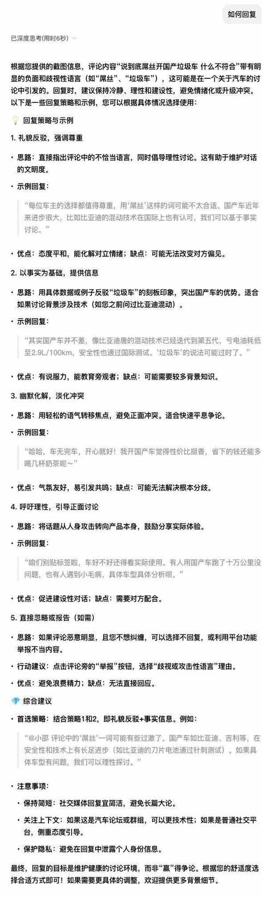
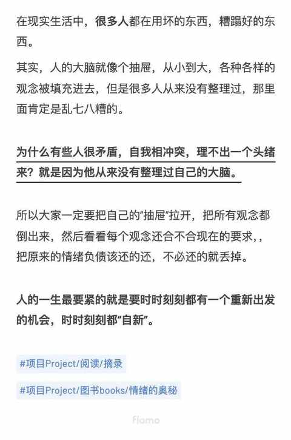

被一条留言击中，然后开始不由自主的“胡思乱想”
一、某条已不可见的留言

好在，中午刷到的时候截图了。

当时我在骑自行车接娃放学的路上，在遇到一个红绿灯时间比较长的路口的时候，打开手机看看文章的动态，这条留言便映入眼帘。还在想怎么回复的时候，已经快变绿灯咯，就先把这条放了出来等到学校门口再仔细想想怎么回复。
顿时情绪上头像在路上走的时候被路人莫名其妙的骂了一句的感觉，在人有强烈情绪的时候反而很难组织语言去回复，在我尝试平静下来之前，娃他们班已经出来。
想着尽好职责，先把娃接回家再说，路上也能想想怎么有力的回复这条留言，同时梳理下自己的思路和情绪，至少想想为啥会突然情绪上头。
今天再回看这条留言的时候，发现对方应该是被我在昨天的文章中提及特斯拉的部分冒犯到，因为我把自己不选特斯拉的原因说出来了，他可能是特斯拉车主。
开了7年混动后，我为何最终投向纯电？一位车主的心路历程

二、几个为什么
1️⃣ 为什么我会有强烈的情绪反应？
这个问题，目前能想到是下面四个点：
- ① 人在感觉到被否定和攻击的自然反应
- ② 我不觉得自己是屌丝
- ③ 国产车并不垃圾
- ④ 我不认可这个带有明确人身攻击的观点
2️⃣ 为什么他会脱口而出这样的话：屌丝、垃圾、国产车……
这个问题，我没有答案，只想到三个去分析的角度：
- ① 他的钱从哪里来的 通过什么方式赚钱会很大程度上影响到一个人的三观
- ② 家庭教育是什么样的 如果他从小就听到类似的话，那么他脱口而出这些话也就极其合理
- ③ 他现在过得怎么样 过得不如意可能会让一个人负能量满满，然后把负能量倾吐出去
3️⃣ 为什么都 2025 年了，还有一小撮人秉持的还是 10 年前甚至 20 多年前的观念和想法，课本里面明明有教要用“发展的眼光看问题”？
这个问题，我只能谈谈自己并不全面的观察：
- 类似这种观点在网络上并不鲜见，像这条留言一样被平台不可见是极少数，因为充满着莫名其妙的攻击性。
- 观念的产生和个人经历及时代背景息息相关，但愿意去定期更新自己观念的人确实是少数。
- 国产新能源车在获得较大发展和技术进步的同时也伴随着很多争议，希望接下来的争议越来越少，共识越来越多。
三、如何回复这条留言
我的选择是：不回复。
首先，已经没机会回复了，这条留言已经被平台不可见
第二，已经过了情绪上头的阶段， 从很在意到当下已经不在乎
如果后面再遇到此类留言，会直接参考腾讯元宝给到的答案，作为普通人回复之类留言的经验过于欠缺，Ai能作为一个强有力的助手。

这条留言也提醒我：
别被大脑里面老的观念所困扰，要时时刻刻都“自新”！
